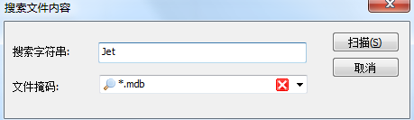

一次恢复因蓝屏丢失的ACCESS .MDB数据库的经验
刚才在编辑一个ACCESS格式的资料库，编辑完了，保存，关闭ACCESS，结果这时候突然蓝屏了
重启电脑之后数据库文件还在，但打开提示“不可识别的数据库格式”
大喊一声卧槽之后，想到ACCESS在关闭数据库的时候会自动压缩数据库，可能会将原来的数据库文件复制一个临时的副本
于是打开临时文件夹，没有收获，调用EVERYTHING以文件名和MDB为关键词，都没有找到
无奈使用数据库恢复软件，下了个Recuva，因为已知临时文件是不存在了，就按文件内容搜索

能用的MDB数据库里肯定有Jet这个关键词恩
结果还真找到了

根据文件大小可以发现，不是那个空白文件，大概是未压缩过的原文件
复制出来，可以正常打开，发现内容毫无损失
关闭ACCESS，自动压缩数据库，发现压缩之后的数据库和空白文件的大小一个字节都不差
大概可以推断，ACCESS压缩数据库是先将原数据库的全部或部分内容读取到内存或者临时文件中，然后压缩，得到结果之后删掉原来的文件，重建一个新文件写入内容
我蓝屏的时间是刚好重建完文件，还没写入内容
有惊无险